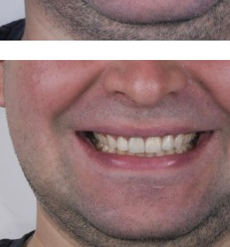
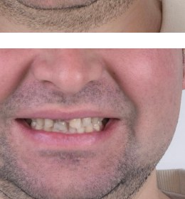
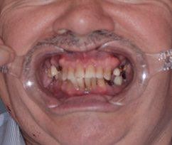
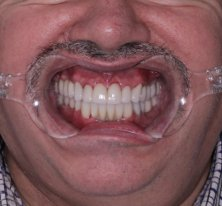
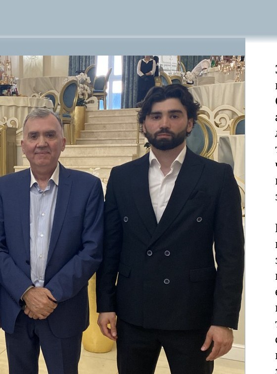

Гигиена полости рта
Профессиональная чистка, удаление камня и налёта, профилактика кариеса и дёсен.
ЦЕНТР СОВРЕМЕННОЙ СТОМАТОЛОГИИ · МОСКВА
Байсангур Битиев — стоматолог-ортопед, для которого каждое лечение — это акт создания гармонии между здоровьем и эстетикой.
узнать о враче
Меня зовут Битиев Байсангур, я стоматолог-ортопед из Москвы. Оказываю полнофункциональное эстетическое восстановление зубов, ставлю коронки и виниры, а моя команда оказывает весь спектр услуг: имплантация, профилактика кариеса, ортодонтия, протезирование, отбеливание и гигиена.
Я родом из горного села Элистанжи, что в Чечне. Мы с семьёй переехали в Барнаул, когда мне было 2 года. Там я вырос, закончил школу и медицинский университет, выбрав путь стоматолога.
С юности я искал способы развиваться: бесплатно ассистировал именитым докторам и дежурил в стационарах, чтобы научиться работать с пациентами. После университета в 2019-м переехал в Новосибирск в ординатуру. Прошёл жёсткий отбор в самую известную клинику города, освоил микроскоп, поставил цель — 1000 пролеченных зубов за год. План перевыполнен в 6 раз.
Весной 2022 года я переехал в Москву. Моя цель — помочь людям жить лучшую жизнь через здоровую и красивую улыбку.
«Стоматология — это искусство и наука одновременно. Каждое лечение — акт создания гармонии между здоровьем и эстетикой.»— Dr. Baisangur Bitiev
Высокоэстетичные виниры, современные технологии и полный спектр стоматологии команды.
Профессиональная чистка, удаление камня и налёта, профилактика кариеса и дёсен.
Высокоэстетичные виниры и люминиры для коррекции формы, цвета и дефектов.
Циркониевые коронки — прочность, долговечность, естественный вид. Гарантия 2 года.
Дисфункция сустава, боли в челюсти, бруксизм. Восстановление правильного прикуса.
Профессиональное отбеливание безопасными системами с контролируемым составом.
Восстановление отсутствующих зубов биосовместимыми имплантами, 3D-планирование.
Передовые методики делают лечение эффективным, безопасным и комфортным.
3D-сканирование, CAD/CAM, DSD — цифровое моделирование улыбки.
Воздушно-абразивная обработка, инфильтрация кариеса (Icon).
Элайнеры и самолигирующие брекеты.
Композиты высокой прочности, биоактивные материалы.
Виниры, люминиры, безопасные отбеливающие системы.
Компьютерное планирование, 3D-томография, титан и цирконий.
Современные методики и материалы проверенных фирм для высококлассного результата.
Каждый пациент неповторим. План — на всех этапах, от диагностики до наблюдения.
Всегда на связи — даже после приёма можно написать по любым вопросам.
2 года на коронки и виниры. Срок службы — более 15 лет.
Реальные случаи из практики. Эмоции, которые невозможно подделать.

Пациент ударился передними зубами ещё в юности — они сильно пострадали, он стеснялся улыбаться. Восстановление циркониевыми коронками и винирами, шесть зубов в зоне улыбки, корректировка десны.
Работа заняла около месяца. Пациент снова улыбается без стеснения в любой ситуации.


Долгие годы откладывал визит к стоматологу: сильный износ зубов, потемнение эмали, недостаток нескольких зубов. Санация, импланты из биосовместимого материала, циркониевые коронки.
Работа продолжалась 9 месяцев. Впервые за много лет он спокойно улыбается.


Однажды он попал в серьёзную аварию: сломана верхняя челюсть, раздроблены передние нижние зубы, смещение всего ряда. Шины — полгода питания через трубочку. Он смирился и жил с этим до 54 лет.
Когда я начал путь в стоматологии, я пообещал помочь ему вернуть красивую и здоровую улыбку.
Отец снова стал широко улыбаться. Это была не просто работа — история о том, как знания меняют жизнь близкого человека.
Если зубы не болят — они здоровы
Кариес на начальной стадии не болит. Осмотр — минимум раз в полгода.
Чем жёстче щётка, тем лучше
Жёсткие щётки портят эмаль. Важны количество и плотность щетинок.
Сладкое вредно для зубов
Частота потребления делает среду кислой — зубы слабеют.
Избыток фтора вреден
В избытке — флюороз. В норме — защита от кариеса.
Зубы мудрости всегда удаляют
Если растут правильно и без дискомфорта — можно оставить.
Отбеливание вредно
Современные системы безопасны при профессиональном проведении.
Лечение всегда дорого
Визиты 2 раза в год помогают избежать дорогого лечения.
2 минуты утром и вечером, мягкая щетина, смена каждые 2–3 месяца, нить или ирригатор.
Меньше сахара, больше кальция и фтора: молочные продукты, рыба, орехи, зелень.
2 раза в год. Ранняя диагностика делает лечение легче и дешевле.
Забота о зубах — это уважение к себе, инвестиция в будущее и способ выразить внутреннюю гармонию.
Удобнее всего написать в Telegram — отвечаю быстро и подробно.
@BaisangurB Записаться на приём